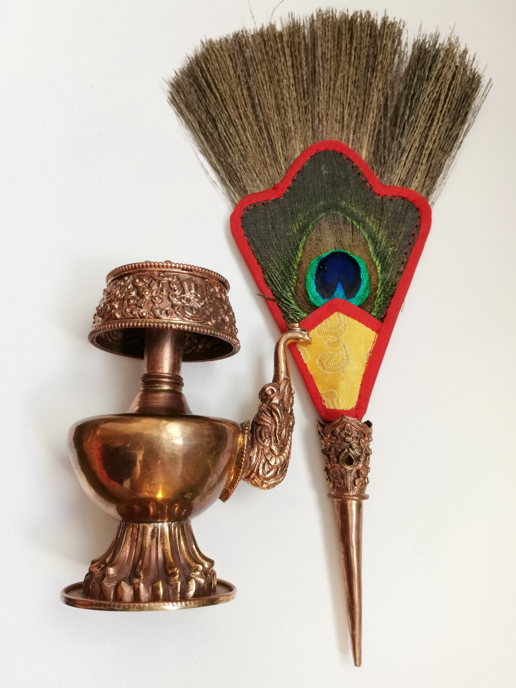
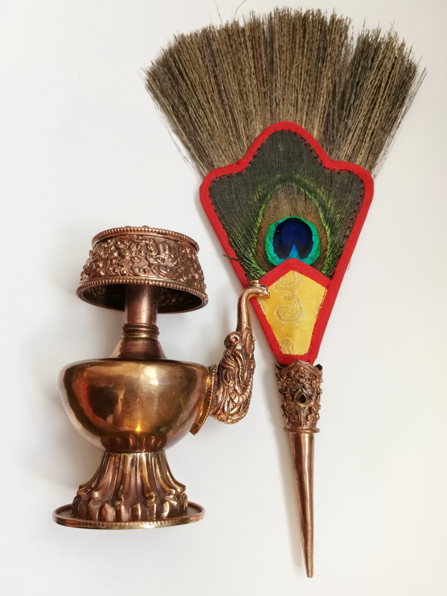

Бумпа или ритуальная ваза - важный ритуальный предмет, используемый для очищения воды во время церемоний посвящения. Ваза имеет длинный носик для выливания воды и используется со съемным опрыскивателем из павлиньего пера. Считается, что очищенная освященная вода устраняет негативность и изгоняет злых духов; ею окропляют или поливают, чтобы очистить людей, пространство или предметы.
Бумпы широко применяются ламами и гуру во многих буддийских церемониях, от сложных ритуалов очищения новых домов, памятников и священных мест, до простых благословений учеников, которые предназначены очистить и защитить их от вредоносных сил.
Бумпа также может использоваться практикующими для подношения воды; в таких случаях вода считается чистым нектаром. Во время выполнения некоторых тантрических ритуалов используются две одинаковые бумпы. Их называют «главной» или «основной» вазой и «действующей» или «рабочей» вазой. Основная ваза наполняется освященной водой и остается на алтаре в монастыре или храме, в то время как ваза действия используется на различных этапах ритуала для фактического выливания воды с целью очищения.
Материал: медь
Высота сосуда: 100 мм.
Высота с веничком: 340 мм.
Страна-производитель: Непал (Патан)
ЦЕНА: 1800 грн.
 
